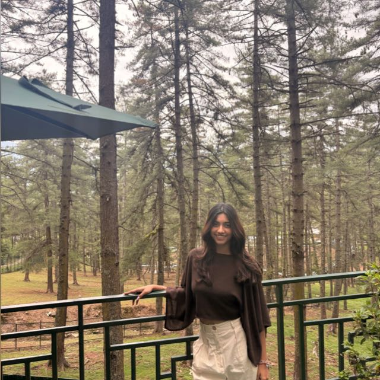

Physics, mechanical engineering & a lot of questions.
I’m studying Physics and Mechanical Engineering at BITS Pilani, Hyderabad, and finding my way into product management. I’m drawn to the moment a small, everyday frustration turns into a problem worth solving.

I like figuring out what’s really going on.
Physics has trained me to question assumptions and work from the basics. Mechanical engineering has made me curious about how things behave in the real world: what can bend, what breaks, and what a design has to account for.
Product is where those questions meet people. I enjoy listening for what’s frustrating someone, understanding the system around it, and working with a team to make the next step clearer.
My projects have taken me from seller tools and AI quality to campus mobility and safer social discovery. Different problems, same pull: understand the people involved, decide what matters, and make something we can learn from.
I love playing football and watching documentaries. I’ve led a team of 20+ people and we’ve won close to 10 tournaments. Football has given me a lot of practice at keeping a team together when the game gets messy.
Want to see what I’ve been working on?